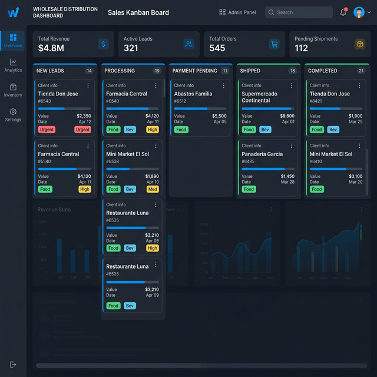
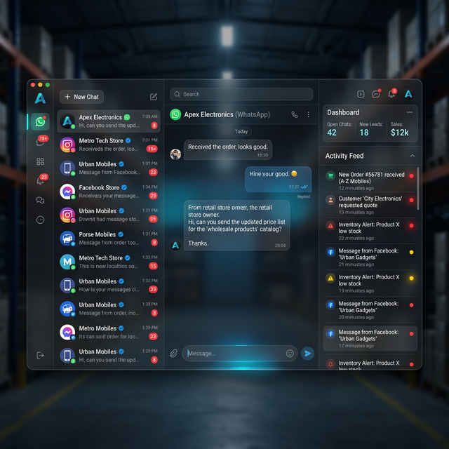

POSICIONAMIENTO DE MARCA
& PROSPECCIÓN PERPETUA
Infraestructura tecnológica integral para Fabricantes, Importadores, Mayoristas (B2B) y E-Commerce de Alta Escala (B2C). Multiplicamos la visibilidad de su marca, activamos distribución algorítmica con satélites y ejecutamos prospección perpetua llave en mano.

Ingeniería Aplicada a su Sector
Nuestra arquitectura satelital y de prospección se adapta quirúrgicamente a la dinámica comercial de empresas mayoristas y marcas de consumo.
Fabricantes, Importadores y Mayoristas (B2B)
Desbloquee colocación masiva de stock y apertura perpetua de nuevos puntos de venta minoristas en todo el país sin depender de viajantes tradicionales.
- » Captación automatizada de comercios minoristas y distribuidores locales.
- » Presentación de catálogos mayoristas directo al WhatsApp de dueños y compradores.
- » Blindaje de autoridad absoluta e imagen industrial frente a la competencia.
E-Commerce y Marcas de Alta Escala (B2C)
Inunde las plataformas de video corto con ángulos infinitos de producto, derribe la desconfianza del comprador y reduzca el costo de adquisición (CPA) a mínimos históricos.
- » Testeo simultáneo de 15+ variaciones (UGC, unboxing, solución de dolor) sin fatiga.
- » Inyección forzada de prueba social (comentarios reales de stock, talles y envíos).
- » Pauta directa sobre publicaciones orgánicas ganadoras (Spark Ads / Existing Post).
Ecosistema de Satélites & Aceleración
Cuatro capas coordinadas para producir creativos infinitos, burlar la fatiga publicitaria y forzar la viralidad orgánica.
Fábrica de Creativos Anti-Hash
Producción de variaciones únicas con ganchos distintos para inundar Reels, TikTok y YouTube Shorts sin ser marcados como duplicados por los algoritmos.
Red de Satélites Replicadores
Cuentas embajadoras que distribuyen el contenido en nichos geográficos aislados bajo perfiles limpios y proxies residenciales dedicados.
Validación Algorítmica
Inyección temprana de retención obligatoria (watch time loops) y comentarios reales de prueba social para activar la recomendación orgánica.
Pauta sobre Ganador Orgánico
Detectar qué video explotó y transformarlo en anuncio pago manteniendo toda la prueba social y comentarios acumulados (Partnership Ads).
Prospección, CRM & Seguridad Física
El ecosistema no termina en las redes sociales: capturamos la intención y la canalizamos hacia transacciones comerciales reales.
Prospección Activa B2B
Extracción automática y continua de bases de datos de comercios minoristas y distribuidores de su rubro, iniciando campañas directas hacia WhatsApp con catálogos mayoristas interactivos.
Calificación & CRM Multiagente
Centralización absoluta de consultas (WhatsApp, Instagram, Facebook, Mercado Libre). Asistentes inteligentes filtran volumen de compra y zona, derivando al prospecto listo a su equipo.
Hardware Dedicado & Seguridad
Para marcas que exigen gran escala, operamos líneas y perfiles en dispositivos celulares físicos reales y redes móviles dedicadas. Simulación humana al 100% para volumen sin bloqueos.

Proyecte la Escala Comercial de su Empresa
Ajuste su objetivo mensual de nuevos comercios minoristas o clientes mayoristas para estimar la infraestructura requerida.
Modalidades de Trabajo
Adaptamos nuestra infraestructura tecnológica a la estructura operativa y escala de su empresa.
Infraestructura Para su Equipo Comercial
Desplegamos la red de satélites, la fábrica de creativos y el motor de prospección. Enviamos todo el flujo de prospectos calificados directamente a su equipo de ventas en WhatsApp/CRM para que ellos gestionen el cierre de pedidos.
- Integración directa con su CRM / WhatsApp comercial
- Control total del cierre y facturación por su equipo
- Optimización continua de señales y red de satélites
Operación Llave en Mano (Turnkey)
Servicio integral delegado. Nosotros producimos las variaciones de video, operamos la red de satélites, pautamos el ganador y atendemos la demanda con asistentes inteligentes, entregándole a su empresa las cuentas y pedidos confirmados.
- Gestión 100% autónoma de creativos, satélites y pauta
- Entrega de compras mayoristas y clientes listos
- Acompañamiento estratégico y escala mensual garantizada
Capacidad de implementación limitada por rubro geográfico para garantizar exclusividad competitiva.